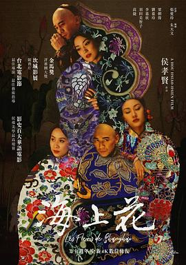

海上花
又名：Flowers of Shanghai
像舞台剧一样，沪语嗲嗲的。侯导典型风格的淡叙事，重情感。
作品信息
| 导演 | 侯孝贤 |
| 编剧 | 朱天文 / 韩邦庆 / 张爱玲 |
| 主演 | 梁朝伟 / 羽田美智子 / 刘嘉玲 / 李嘉欣 / 高捷 / 潘迪华 / 伊能静 / 魏筱惠 / 方璇 / 陈宝莲 / 许安安 / 夏祎 / 谢衍 / 徐明 |
| 类型 | 剧情 |
| 制片国家/地区 | 中国台湾 / 日本 |
| 语言 | 粤语 / 上海话 |
| 上映日期 | 1998-10-01(中国台湾) / 1998-05-20(戛纳电影节) |
| 片长 | 113分钟 |
| IMDb | tt0156587 |
说过什么
2024-01-28 22:25:36
广播 · 看过 · ★★★★★
像舞台剧一样，沪语嗲嗲的。侯导典型风格的淡叙事，重情感。
最后一次看到是 2026-10-07T23:13:48+08:00 · 豆瓣原页